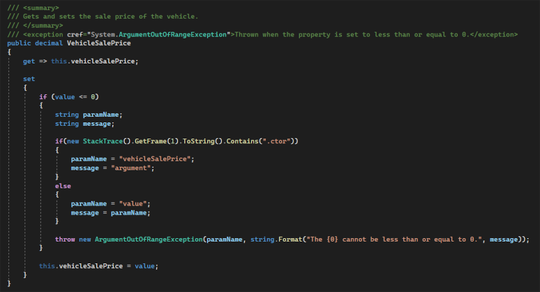
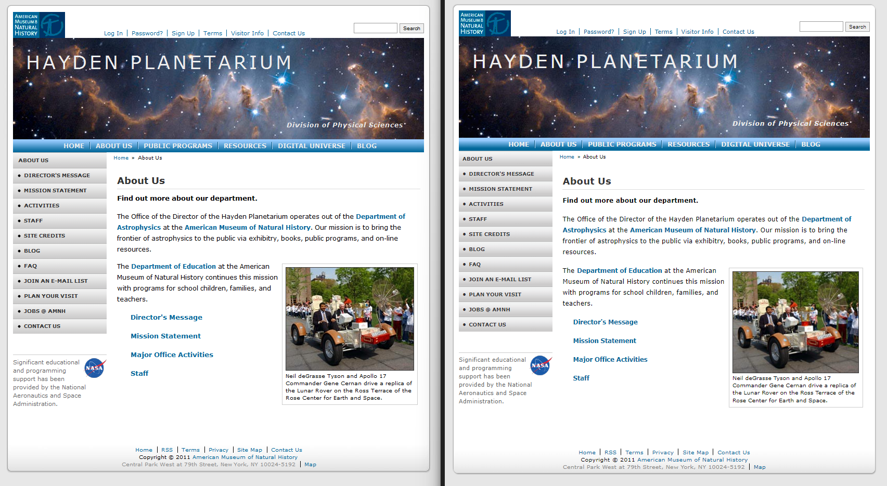

My Portfolio
Programming
ADEV Assignment 1 - Arrays & Enums
This is a portion of my first programming assignment in ADEV-2008. It shows two methods for retrieving the cost of items in an enumeration class. Originally, I had coded these using switch statements, assigning a value to a single cost variable depending on the enumeration value. I didn't like how bulky and repetitive the code felt, so I thought of how I could achieve the same result with less repetition. I ended up using a decimal array where the indexes matched the integer values of the items in the enumeration. I thought this was a lot cleaner and a more simple way of achieving the desired outcome.
ADEV Assignment 2 - Exceptions
This is a small portion of my second assignment in ADEV-2008. This assignment was to show our ability to code proper exception throwing and handling. What's shown in the photo is not the proper way one would throw an exception but it does show my creativity and my ability to problem solve and find solutions within documentation. The "if" statement finds the method where the exception was generated. If that method was the constructor then one parameter name and message is used, otherwise different ones are used. Then, the values are passed into a single exception throw. Although this is not the proper way of accomplishing this, my professor told me that he's had many students attempt to solve the issue that this solves, but that I'm the first to succeed.
Object-Oriented Systems Analysis
COMP Assignment 3 - Use Case Diagram
This is a use case diagram created for the third assignment in COMP-1258. This was a group assignment where we would come up with a list of functional and non-functional requirements for a theoretical software of our choosing, then use those to create a use case diagram. I made the first pass of the diagram which was then iterated on by a teammate, which is what you see here. This showcases my understanding of project requirements, use case diagrams and UML, and my ability to work in teams.
Database Management Systems
DBMS Assignment 5 - Normalization
Depicted is a comparison between the starting data and my final entity relationship diagram (ERD) for the fifth assignment in DBMS-1002. The task was to take the starting data, run it through each phase of normalization, and ultimately create an ERD from the fully normalized data. This shows my ability to break down information into its discrete parts, organize them, and distinguish connections between the elements. As well, my understanding of relational databases and normalization is on display.
Networking
NTWK - Midterm Project
This is the logical topology of a network created for my midterm project in NTWK-1010. It is a fully configured network featuring end-to-end connectivity as well as remote telnet access on the R1 router and both switches. The console on the righthand side of the image shows the remote access to the router in action. This showcases my ability to configure networking devices. As well, the project required problem-solving and troubleshooting skills, since I had to determine the cause of connectivity issues that arose.
Web Development
WEBD Project 1 - Design to Development
This is a the end result of my first web development project in WEBD-1008. Depicted in the photo is the mockup that we were given for us to code (left) and what I created (right). I spent a lot of time working on the website. I didn't track my time but I'd estimate it took me upwards of 20 hours as I spent multiple full days working on it. It showcases my ability to create a website based solely on an image, my attention to detail, as well as my dedication to getting quality work done.
